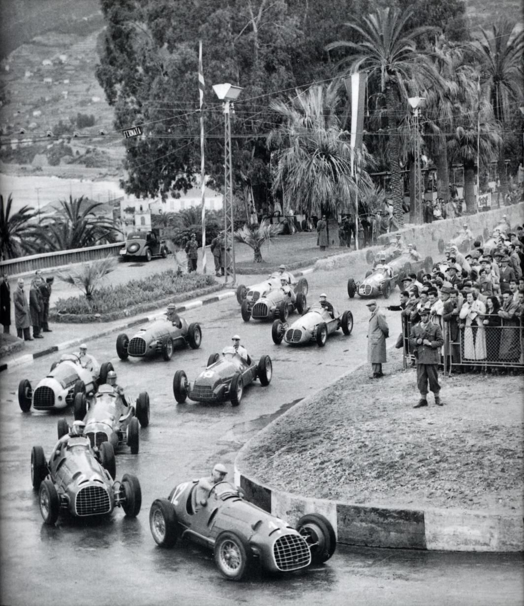

🏁 Orígenes
El automovilismo comenzó a finales del siglo XIX, con carreras entre ciudades en Europa.
En los años 1920 y 1930, ya existían campeonatos europeos con coches potentes de marcas como Alfa Romeo, Bugatti y Mercedes-Benz.
Tras la Segunda Guerra Mundial, la FIA (Federación Internacional del Automóvil) creó en 1950 el Campeonato Mundial de Fórmula 1, siendo el Gran Premio de Silverstone (Inglaterra, 13 de mayo de 1950) la primera carrera oficial.
🏆 Primeros años (1950-1960)
El primer campeón fue Giuseppe Farina (Alfa Romeo).
Poco después brilló Juan Manuel Fangio (Argentina), quien ganó 5 títulos en los 50’s, siendo una leyenda.
En esta época los autos eran muy peligrosos y las medidas de seguridad eran casi inexistentes.
🔥 Expansión y cambios (1960-1980)
Aparecen nuevas marcas como Lotus, Ferrari, McLaren y Williams.
Los autos introducen innovaciones aerodinámicas como los alerones.
Pilotos legendarios como Jim Clark, Jackie Stewart, Niki Lauda y Emerson Fittipaldi dominaron esta era.
En los 70’s se empiezan a aplicar mejores normas de seguridad debido a los accidentes mortales.
🚀 Era moderna temprana (1980-2000)
Aumenta la tecnología: motores turbo, electrónica, neumáticos especiales.
Grandes rivalidades: Ayrton Senna vs. Alain Prost.
En los 90’s destaca Michael Schumacher con Ferrari, logrando 7 campeonatos mundiales (5 de ellos consecutivos).
⚡ Siglo XXI (2000 en adelante)
2000-2004: Dominio absoluto de Ferrari y Schumacher.
2010-2013: Supremacía de Sebastian Vettel con Red Bull.
2014-2020: Era híbrida (motores eléctricos + combustibles), con dominio de Mercedes y Lewis Hamilton (7 títulos mundiales).
2021 en adelante: Surge la era de Max Verstappen y Red Bull, con un dominio impresionante.
🌍 Actualidad
La F1 es un espectáculo global, con carreras en todos los continentes.
Combina tecnología, estrategia y talento humano.
Hoy en día es también un laboratorio de innovación en energías más limpias y sostenibles.
👉 En resumen, la Fórmula 1 nació oficialmente en 1950, y desde entonces ha pasado de ser un deporte muy peligroso y casi artesanal, a convertirse en una máxima expresión de ingeniería, espectáculo y competencia mundial.
